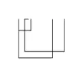

Entity Grimoire
 Bethor
Bethor

Bethor is the Olympic Spirit of Jupiter, one of seven planetary spirits from the Medieval grimoire tradition. These beings represent the pagan energies of celestial bodies and predate the angelic and demonic classifications of later Ceremonial Magick.
Attributes
Planet: Jupiter ♃
Metal: Tin
Day: Thursday
Zodiac: Sagittarius, Pisces
Powers: Honors, wealth, dignity, treasure discovery, transmutation to tin, reconciling aerial spirits
Legions: Commands 29,000 legions of spirits
Working with Bethor
Bethor may be invoked to lend Jovian power to spellwork. The spirit's sigil can be inscribed on candles, drawn on paper pentacles with spell materials placed atop, or written onto paper with charm words and burned or added to pouches.
Associated Names
Names of Planetary Spirits (Jupiter): Netoniel, Parasiel
Names of Power: Hismael, Yophiel
Source
Arbatel de Magia Veterum (1575)